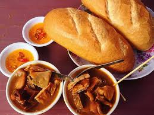

Nguyên Liệu Phá Lấu Bò Cơ Bản:
- Lòng bò: 2 kg
- Dừa nạo: 500 g
- Gừng: 500 g
- Gia vị: bột ngũ vị hương, bột cà ri, cà ri dầu, lá cà ri, hoa hồi, quế,đường, bột ngọt, hạt nêm,tiêu, ớt băng, tỏi băm, hàng băm, riềng say.
- Ăn kèm: bánh mì, rau sống
- Bạn đem 500g dừa nạo bóp thật kỹ (không cho thêm nước) rồi vắt lấy khoảng 300ml nước cốt. Tiếp theo, cho thêm nước vào vắt thêm khoảng 2 – 4 lít nước dão tùy vào lượng thịt bò.
- Lòng bò mua về, bạn cho muối vào bóp thật kỹ, sau đó rửa sạch.
- Bắc một nồi nước lên bếp đun sôi, sau đó, cho một củ gừng đập dập hoặc xay nhuyễn, 1 – 2 muỗng canh muối, lòng bò vào trụng, đợi nước sôi trở lại thì vớt ra, xả sạch.
- Tiếp tục nhồi lòng bò với muối lại một lần nữa. Rửa nhiều lần cho thật sạch rồi vớt ra để ráo.
- Trộn đều hỗn hợp gia vị gồm: 1/2 muỗng canh ngũ vị hương, 1/2 muỗng canh bột cà ri, 1 muỗng canh muối, 1 muỗng canh đường, 1 muỗng canh bột ngọt, 1 muỗng canh hạt nêm, 1 muỗng cà phê tiêu, 1 hũ cà ri dầu, 1/2 muỗng canh ớt xay, 1/2 muỗng canh tỏi băm, 1/2 muỗng canh hành băm, 1 muỗng canh riềng xay.
- Với những miếng lòng bò to, bạn đem cắt đôi. Sau đó đem lòng bò ướp với hỗn hợp gia vị trên, thêm vào vài giọt nước màu cam, 1 muỗng canh nước mắm rồi tiếp tục trộn đều.
- Ướp lòng bò khoảng ít nhất 1 giờ cho ngấm gia vị. Sau đó đun nóng khoảng 150ml dầu ăn, thêm 1 muỗng canh hành băm, 1 muỗng canh tỏi băm, 1 muỗng canh riềng xay, 1-2 bông tai vị, 2 miếng quế nhỏ cỡ ngón tay út, lá cà-ri và, phi thơm thì cho lòng bò vào chiên cho săn lại.
- Bắc nồi nước dão dừa lên bếp, cho bò đã xào săn vào, đun sôi rồi hạ nhỏ lửa hầm cho tới khi lòng bò thật mềm. Trong quá trình hầm, thi thoảng mở nắp để nước hầm không bị đục. Khi lòng bò đã mềm, bạn cho thêm 300ml nước cốt dừa vào, nêm nếm lại gia vị gồm: muối, nước mắm, đường phèn cho vừa ăn rồi tắt bếp.
- Múc phá lấu bò ra chén và ăn kèm với bánh mì hoặc rau răm, muối tiêu chanh hoặc nước chấm chua ngọt.